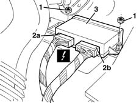

5505A18 multi-function control unit - r r
- Path
- Procedures > 55 ELECTRICAL EQUIPMENT > 5505 INSTRUMENT/GUAGE ELECTRICAL WIRING > 5505A multi-function components > 5505A18 multi-function control unit - r r
- Kind
- repair procedure (removal / refitting; the operation number is the code)
- Applies to
- all engines; all production periods
- Interactive page
- https://sloeber94.github.io/elrnDB-fMltpl/en/#/2891866
Applies to: all engines; production: da 09/03, da 04/02 a 08/03
 Removing
Removing
 Refitting
Refitting1. Unscrew the nuts.
2. Disconnect the electrical connections (2a (2b).
 | Name | Connector |
|---|---|---|
2a | Integrated services control unit | M40A |
| Name | Connector |
|---|---|---|
2b | Integrated services control unit | M40A |
3. Remove the integrated services control unit.

Applies to: all engines; production: da 09/03, da 04/02 a 08/03
Refitting
RemovingCheck that the control unit is undamaged.
Connect the electrical connections to the control unit.
Place the control unit in position and secure it using the nuts.
Check that systems controlled by the control unit are working properly.